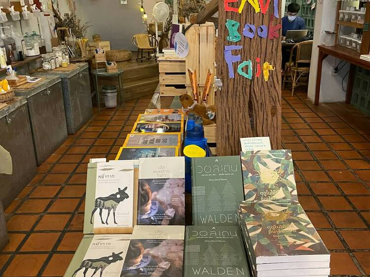

อีเวนต์
Mini Envi Book Fair มหกรรมหนังสือสิ่งแวดล้อม

ร้านรีฟิล “Refill Station ปั๊มน้ำยา” สำหรับคนรักสิ่งแวดล้อม จัดงานหนังสือเล็กๆ น่ารักๆ ให้คนอยากอ่านหนังสือเพื่อสิ่งแวดล้อมลองแวะมาดูกันว่าจะมีเล่มไหนน่าหยิบติดมือกลับบ้านไปบ้าง
“งานมหกรรมหนังสือสิ่งแวดล้อม (ฉบับมินิ)” เกิดขึ้นจากเจ้าของร้านเห็นว่าหนังสือเกี่ยวกับสิ่งแวดล้อมในร้านหนังสือมีน้อยมาก ซึ่งมันสะท้องถึงความสนใจของคนส่วนใหญ่ในตอนนั้นได้ดีเลย เจ้าของร้านเลยอยากจัดงานหนังสือนี้ขึ้น เพื่อให้หลายคนที่อยากลองอ่านเจอตัวเลือกดีๆ แล้วเมื่ออ่านเสร็จจะได้มาพูดคุยกัน โดยจะมีทั้งนิทาน วรรณกรรม และบทความต่างๆ ให้เลือกดู
สำหรับคนที่มาซื้อหน้าร้านจะมีรางวัลเมื่อซื้อครบขั้นต่ำ คือ ซื้อครบ 500 บาท ได้รับหลอดพับฟรี และเมื่อซื้อครบ 1,000 บาน ได้รับขวดน้ำพับได้ฟรี งานนี้มีตั้งแต่วันนี้ - 30 เมษายน 2565 ณ Better Moon Guesthouse&cafe x Refill Station (สุขุมวิท77/1 ใกล้ BTS อ่อนนุช) ร้านปิดทุกวันจันทร์